Founders & scale-ups
You’re building something that matters. I help you find focus, shape momentum and turn strategy into traction.
Most brands already have the ingredients. What breaks is execution: strategies that sound great in the boardroom fall apart in the real world.
Hello, I’m Venice Asourmatzian.
I help in-house teams, fast-scaling brands and agencies under pressure turn brand, content, social and creator marketing into growth, as a fractional marketing lead, strategic advisor or project partner.
I’ve shipped campaigns that change culture and hit targets for Mars, eBay, TUI and Bayer.
I’m a marketing consultant and advisor, recognised by Campaign Media and WARC, who turns content, social, partnerships and creators into growth drivers.
For 12+ years I’ve worked at agency groups Publicis and WPP, and directly with Mars, Bayer and H&H Group, building billion-dollar brands and helping teams turn attention into measurable business outcomes across FMCG, beauty, food, wellness, travel and tech.
That means every channel that matters: from TV, OOH and retail media to creators, partnerships, product placements and celebrity endorsements, and everything in between.
My work lives in the messy middle between strategy and execution: building ideas, operating models and ways of working that help teams move faster and show up consistently.
The future belongs to brands that move at culture speed and aren’t afraid to try new things. I help them get there.
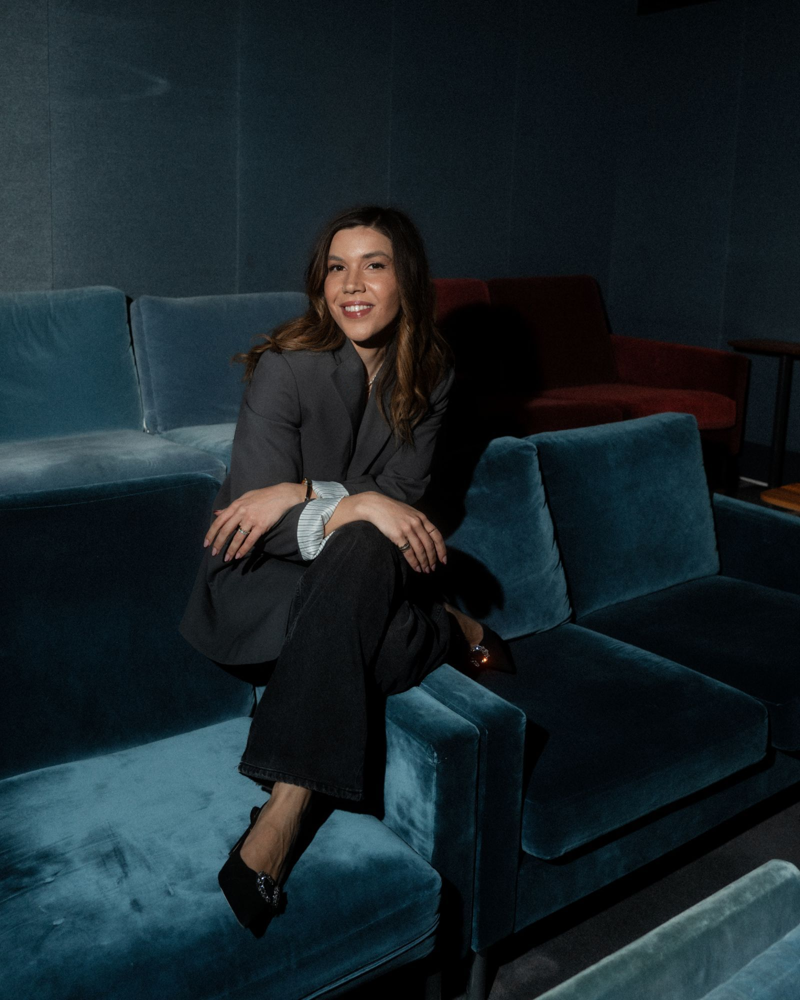
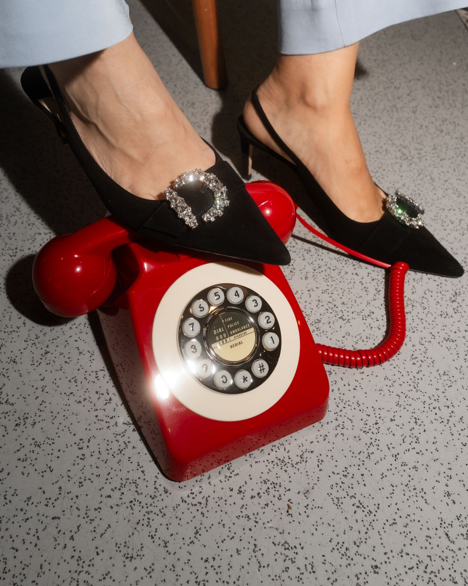
You’re building something that matters. I help you find focus, shape momentum and turn strategy into traction.
You’re juggling a lot. I bring clarity to what’s next, align the moving pieces and make the work land harder.
You need a strategist who gets the brief, and elevates it. I plug in seamlessly and make it sharper.
Positioning, go-to-market, and the plan that follows.
Diagnosis before tactics. We define who you’re for, what you stand for and what you’ll say no to, then turn it into a plan your team can actually run, whether you’re launching something new or expanding into new markets.
Social, creators, partnerships, and the system behind them.
I help brands compete for attention in social-first feeds. Where your brand shows up in culture, and what it says when it gets there: across social, creators, partnerships and your own channels, built as a repeatable system rather than a lucky streak.
One big idea, a thousand small executions.
Campaigns that travel across channels, formats and markets: a single organising idea, translated into every size of execution, with the follow-through most campaigns forget.
The teams, processes and tools that scale without chaos.
The unglamorous machinery that makes good work repeatable: who does what, in which tool, by when, so growth doesn’t mean mess.
The future of marketing, social, community-led growth and the creator economy.
Engaging keynotes, panel moderation and event hosting, from intimate corporate sessions to global industry conferences. Talks and training that trade buzzwords for evidence, for teams that want capability and stages that want substance with energy.
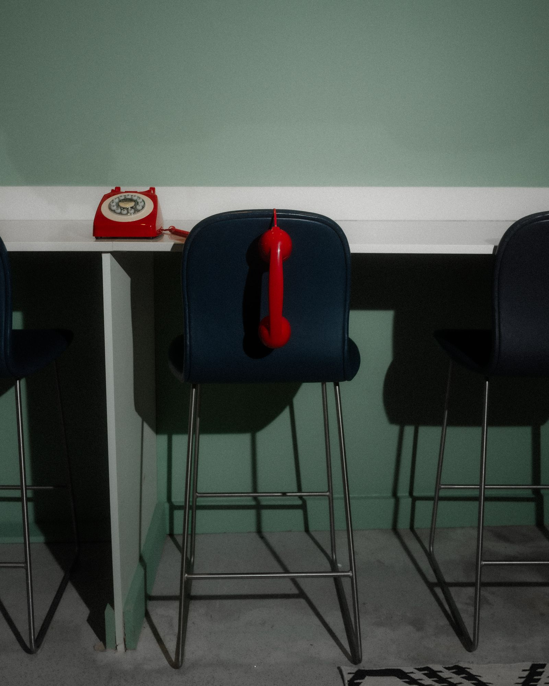
Tick each one that sounds like your team. Five out of five? That’s a match.
Sounds like we’d make good work together. Tell me what’s on your plate.
A snapshot of recent work.
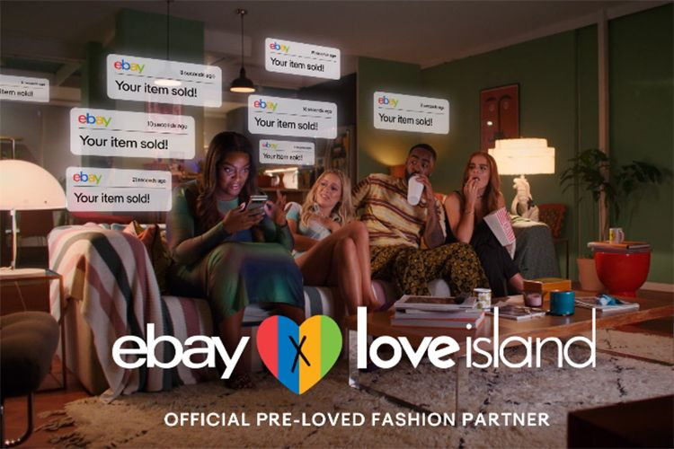
Co-led the strategy positioning eBay as Love Island’s official pre-loved fashion partner, shifting the narrative from fast to circular.
Selected outcomes
700% rise in searches · 935% increase in pre-loved mentions · 32.4% partnership recall · award-winning work.
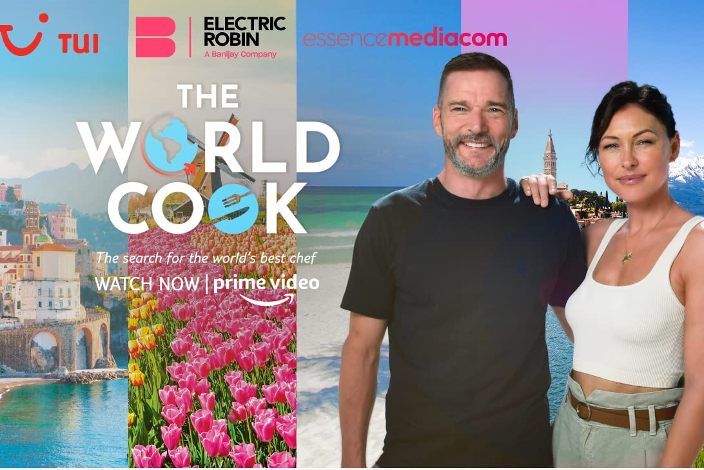
Co-led the strategy and production ecosystem for an Amazon Prime cooking series, reframing TUI as a year-round experiences brand.
Selected outcomes
Highest ROI across TUI media spend that year · 93.4% viewer approval · 10% increase in purchase intent.
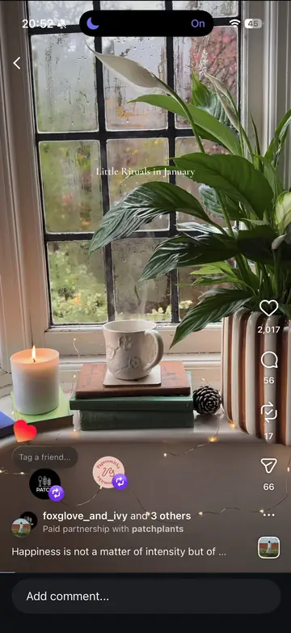
Rebuilt the content system around expertise, inspiration and personality, uniting creators, community and performance.
Selected outcomes
149.7% increase in organic views · 35% uplift in watch time · 527% uplift in tracked social revenue month-on-month.
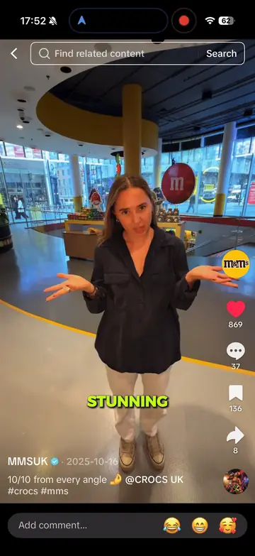
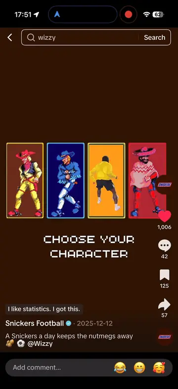
Built a social-first operating model across a complex European portfolio, clarifying narratives and accelerating culturally relevant work.
What changed
One social-first operating model across a complex European portfolio, clearer narratives across brands, and reactive approvals fast enough to join cultural moments while they still mattered.
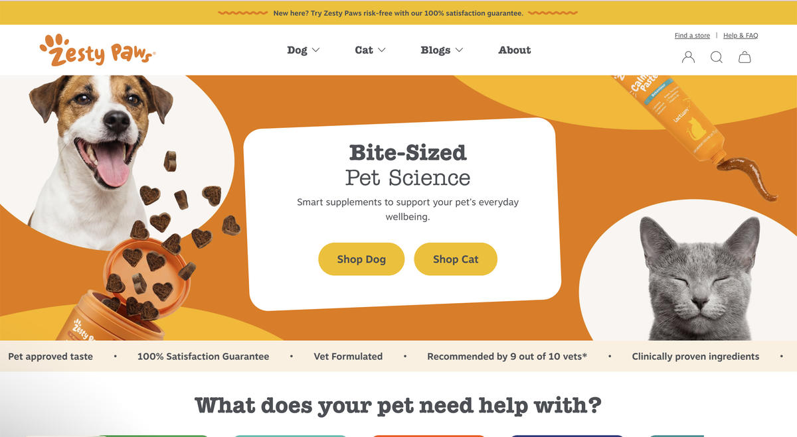
Led go-to-market across four European markets, spanning compliant messaging, ecommerce, creators and team build.
What changed
A launch across four European markets, with compliant messaging, ecommerce, a creator programme, TikTok Shop and an in-market team built from scratch.
Scroll case files
Trusted by household names, challenger brands, and the agencies that build them.
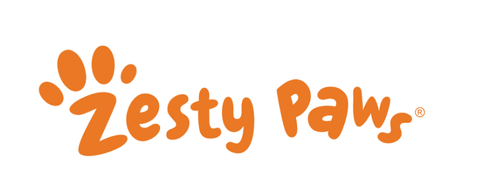
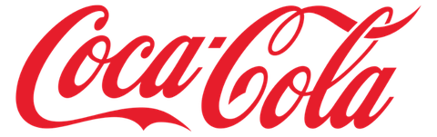
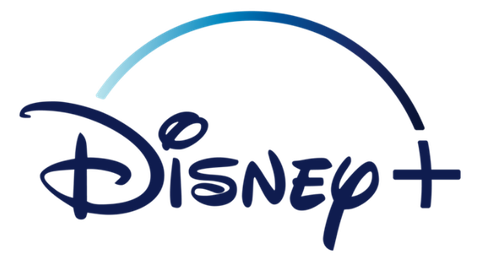
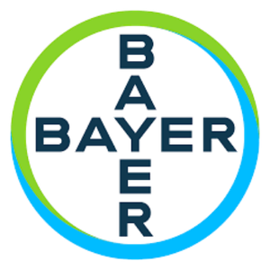
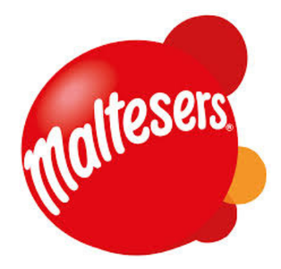
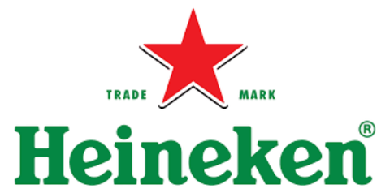
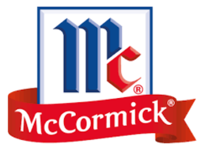
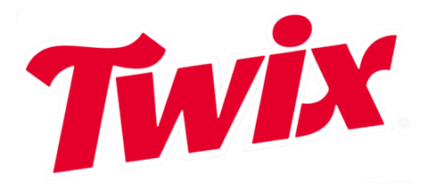
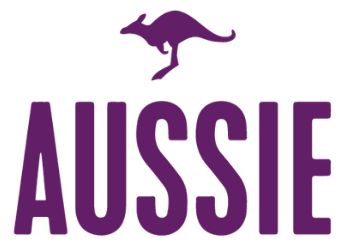
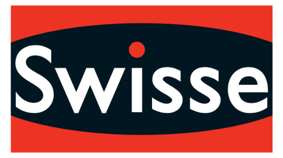
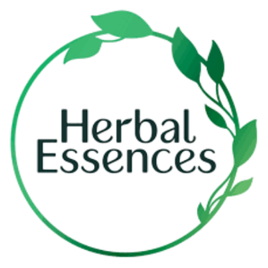
Scroll logos
Drag, swipe or use the arrow keys to read the notes.
Tell me what’s on your plate. We’ll work out the right recipe together.
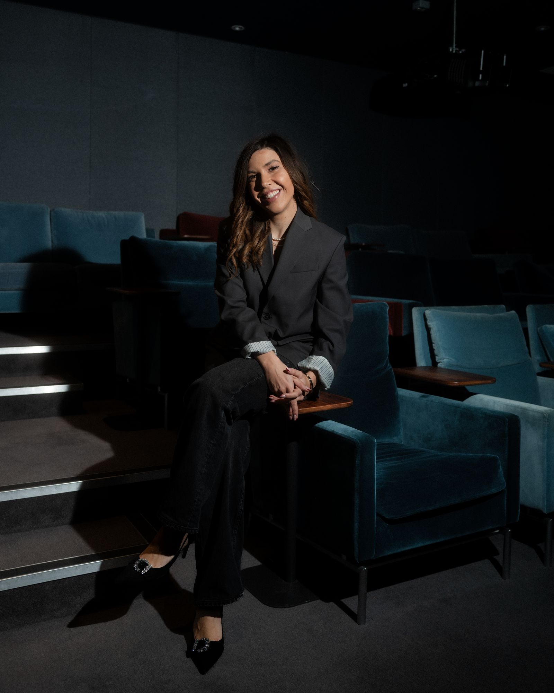
Privacy noticeBack to top ↑